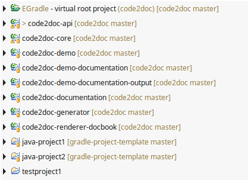

User guide
User guide
Project decoration
Mark projects
Projects where the set gradle root project folder is the parent are
marked with an EGradle icon:

Change root project in preferences
When you change your root project the markers will be updated.
Problem marker overlay
Remark: Maybe the problem marker is a little bit difficult to see on
the marked projects but there is still the "Problems"-View in eclipse
where you can see it much more better.